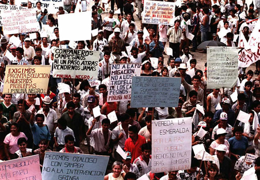
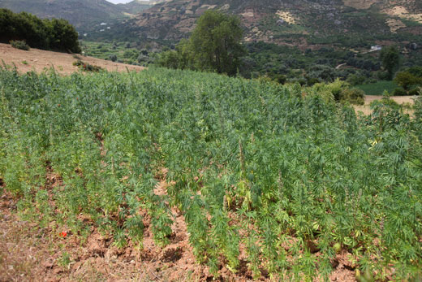
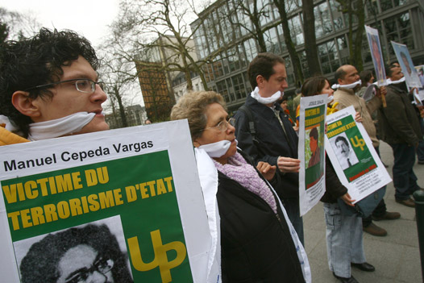

El final del siglo XX representó para los colombianos cambios que iban al compás de acontecimientos internacionales, como la caída de la Unión Soviética, el fin de la Guerra Fría y, con ello, la llegada de nuevos actores mundiales y el inicio de las políticas neoliberales, entre otros aspectos. Por su parte, América Latina consolidó sus democracias, lo que significó el fin de las dictaduras militares en muchos países.
-
01
El narcotráfico y la violencia
Open or CloseEstos cambios se reflejaron en Colombia; por ejemplo, con el debilitamiento de los movimientos de izquierda, que optaron por replantear sus bases ideológicas y sus formas de sostenimiento económico. Además, los gobiernos de las dos últimas décadas se alinearon con la dinámica neoliberal que se impuso en el mundo.
En Colombia, desde el gobierno de Virgilio Barco (1986-1990) se orientaron políticas económicas acordes con el modelo neoliberal.
Estos cambios del país ocurrieron a la vez en toda la región latinoamericana. Sin embargo, Colombia vivió una experiencia particular que marcó su destino por varios años: la inserción como productor de estupefacientes para la gran cadena del narcotráfico. Esta condición afectó el orden social, político, jurídico, económico y cultural.
Colombia, un país que inicia un nuevo siglo con cambios que la sociedad asume poco a poco.
Las últimas generaciones de colombianos vivieron las consecuencias del narcotráfico. Nombres como Pablo Escobar, Carlos Lehder, Gonzalo Rodríguez Gacha o los hermanos Rodríguez Orejuela formaron parte de la vida cotidiana del país. Sus acciones violentas, las formas económicas que promovieron y su injerencia en las decisiones políticas afectaron e involucraron a grandes capas de la población. En el presente, el país es, en parte, el resultado de los hechos ocurridos en aquellos años y propiciados por esos actores.
Las dinámicas que se construyeron para facilitar la participación de los carteles de la droga en el negocio internacional del narcotráfico se basaron en una transformación de la vida local, regional y nacional. Grandes masas de campesinos fueron despojados de sus tierras u obligados a cultivar a gran escala las plantas que sirven de insumo para la fabricación de estupefacientes; así mismo, para garantizar la vía libre a la salida de la droga, fue necesario contar con la complicidad de autoridades de distinto nivel, lo que desató prácticas de corrupción y un debilitamiento de la ética pública.
Cambios en los índices de violencia
Con el narcotráfico se produjeron alteraciones en los índices de violencia. Estos venían siendo muy altos entre 1948 y 1953, disminuyeron levemente entre 1965 y 1970, y se incrementaron desde 1985. La violencia en el país cobró miles de víctimas, y a fines de siglo fue indiscutible el papel y la responsabilidad del narcotráfico en el crecimiento de estas cifras, particularmente porque este propició confrontaciones urbanas y rurales y estimuló la conformación y fortalecimiento de grupos al margen de la ley.
El fenómeno del narcotráfico tiene numerosas aristas. Una de ellas es la producción, que requiere materias primas y procesamientos químicos para su transformación en derivados que se comercializan para su consumo en el exterior. Por lo tanto, se trata de un negocio con socios nacionales y extranjeros. Estados Unidos, siendo el principal receptor y consumidor de droga, forma parte de este inmenso fenómeno.
01.1De la marihuana a la cocaína
El negocio del narcotráfico ha tenido distintas etapas. Primero se cultivó y exportó marihuana, y luego cocaína y otras sustancias.
La costa Caribe colombiana, especialmente la región de Santa Marta y el departamento de La Guajira, fue el centro de los primeros cultivos de marihuana. La producción de marihuana encontró demanda en Estados Unidos; el dinero producto de estas ventas ingresó de manera ilegal al país y constituyó una notable fuente de fortunas para los exportadores.
La sociedad colombiana no puso mayores reparos a estos "nuevos empresarios" y comerciantes, por el contrario, en algunos sectores sociales fueron admirados por la capacidad de amasar grandes riquezas. Sin embargo, de la mano de la riqueza empezaron a llegar también nuevas formas de violencia. La bonanza de la marihuana abarcó entre 1974 y 1980.
La bonanza marimbera, como se le conoció a la riqueza que trajo la exportación de la marihuana, afectó a grandes sectores de la sociedad colombiana. Tanto que alimentó temáticas literarias y de producción televisiva y radial. La mala hierba, del periodista Juan Gossaín, es un ejemplo de ello.
Cerca de veinte años de tráfico de marihuana hacia Estados Unidos abrieron para los narcotraficantes colombianos el camino para encontrar socios, mercados, proveedores de químicos y armas, y rutas para comercializar luego la cocaína.
Para mediados de la década de los setenta, traficantes colombianos exportaban de Perú y Bolivia la pasta de coca, que se procesaba en Colombia y luego se vendía en Estados Unidos, vía Centroamérica o las Antillas. También se utilizaban "mulas" (personas que viajaban en vuelos comerciales y ocultaban en sus maletas o cuerpo cantidades pequeñas de cocaína).
La razón por la que surgieron los carteles tuvo que ver con las disputas entre grupos de comerciantes por el control de las rutas para llevar la droga a Norteamérica. Ese dominio fue alcanzado por Pablo Escobar, quien se posicionó por encima de otros grupos de Medellín, del norte del Valle y Cali, de la costa Caribe, los Llanos Orientales y el centro y sur del país.
Hacienda Nápoles de Pablo Escobar, quien acaparó, con el uso de la violencia y la compra de conciencias, la mayor parte del mercado de la droga. Otros jefes narcotraficantes, como Carlos Lehder, los hermanos Rodríguez Orejuela, Gonzalo Rodríguez Gacha, aceptaron en un primer momento el dominio de Escobar, pero poco a poco quisieron vencerlo con distintos métodos, lo que ocasionó el recrudecimiento de la violencia en el país.
El Estado no advirtió la profundidad del problema del narcotráfico y poco hizo contra él, salvo la firma del Tratado de Extradición de 1980, lo cual implicaba someter a nacionales a la justicia estadounidense, situación que desencadenó innumerables actos de terrorismo que buscaban presionar al gobierno nacional para que cambiara esta determinación.
No obstante, para arrinconar al Estado y cumplir sus cometidos, los carteles de la droga iniciaron una batalla desigual. Con sus armas y poderío sometieron a las principales ciudades del país a un régimen de terror. Inesperadamente empezaron a estallar bombas en lugares transitados. El miedo se apoderó de la ciudadanía. Luego vinieron los magnicidios, como una retaliación por las medidas que tardíamente empezó a tomar el Estado.
Uno de los hechos que suscitó el enfrentamiento del narcotráfico por parte de los gobiernos colombianos fue el asesinato del ministro de Justicia del gobierno de Belisario Betancur, Rodrigo Lara, como represalia por la lucha jurídica que este emprendió contra los carteles y que llevó a la destrucción del laboratorio de Tranquilandia.
Recuerda
Una vez el Estado entendió la dimensión del problema del narcotráfico empezó a tomar medidas como el decomiso de cargamentos y la captura masiva de personas involucradas en su comercio. Frente a esto, los carteles respondieron con una ola de terrorismo (1984-1992), que incluyó el asesinato de figuras públicas y atentados terroristas en las principales ciudades. La idea era someter al Estado a los intereses de los jefes de la droga, quienes, además, incursionaron en la política y con sus enormes recursos obtuvieron curules en el Congreso.
La violencia generada por el enfrentamiento entre el gobierno y los carteles se recrudeció. El asesinato de tres candidatos presidenciales (Luis Carlos Galán, Jaime Pardo Leal y Bernardo Jaramillo Ossa), la bombas en las sedes del periódico El Espectador, el DAS y en un avión de la aerolínea Avianca, entre otros actos terroristas, y las respuestas del gobierno amenazando con la extradición de los capos de la droga, dejó un saldo de víctimas y damnificados en la población civil, así como un hastío por las acciones de unos y otros.
Los enormes recursos con los que contaban los carteles les permitieron comprar las conciencias de funcionarios del poder judicial, ejecutivo y legislativo, ubicados en cargos de decisión. Por tal razón, cuando algunos de sus líderes eran detenidos, rápidamente eran declarados inocentes. En tal contexto, el recurso de la extradición era lo único a lo que le temían los narcotraficantes.
Con el ánimo de frenar la violencia, el gobierno de César Gaviria (1990-1994) abrió las puertas a las negociaciones con los narcotraficantes. Para ello, les ofreció no extraditarlos si se sometían a la justicia, confesaban sus delitos y acataban las penas impuestas. Inicialmente, la estrategia funcionó con el sometimiento de figuras del clan Ochoa. Por su parte, Pablo Escobar prefirió esperar a que la Constituyente de 1991 aprobara la no extradición de nacionales, luego se sometió a la justicia.
Un año después, en 1992, Escobar se fugó de la cárcel. El gobierno emprendió una campaña para recapturarlo, que terminó con la muerte del capo en diciembre de 1993.
Recuerda
El rediseño del Estado colombiano a partir de la Constitución de 1991 y el fortalecimiento de las Fuerzas Armadas y la Policía, así como del sistema judicial permitió, con el pasó de los años, capturar a los líderes de los principales carteles del narcotráfico, algunos de ellos fueron extraditados a Estados Unidos. No obstante, el comercio de coca continúa, aunque sin la fuerza y daño que ocasionó al país en los años ochenta y noventa.
01.2Consolidación
Actividades para consolidar lo que has aprendido en esta sección.
-
02
La Constitución de 1991
Open or CloseDurante los gobiernos de Virgilio Barco (1986-1990) y César Gaviria (1990-1994) se realizaron diálogos con grupos guerrilleros para conseguir su desmovilización. El principal grupo que participó en estos diálogos fue el M-19. Luego de ellos se convocó a una Asamblea Constituyente con el propósito de abrir espacios políticos a sectores que pedían mayor participación, así como para poder implementar unas reformas del Estado, que con el marco jurídico de la Constitución de 1886 eran poco eficaces.
Un movimiento conocido como la "Séptima Papeleta", conformado por juristas y académicos jóvenes, impulsó la necesidad de la Asamblea en la conciencia política del país, aprovechando las elecciones de marzo de 1990, en las que los colombianos votaron para elegir candidatos a seis cargos: Senado, Cámara de Representantes, Asambleas Departamentales, Juntas Administradoras Locales, Concejos Municipales y Alcaldías. En esa ocasión se introdujo una séptima papeleta, para hacer la consulta sobre la convocatoria de una Asamblea Nacional Constituyente. Más de dos millones de colombianos apoyaron la iniciativa.
El presidente César Gaviria convocó a elecciones en diciembre de 1990 para elegir los 70 miembros de la Asamblea Nacional Constituyente. Además se dio representación con voz, pero sin voto, a representantes de los grupos guerrilleros que estaban en procesos de negociación: dos del Ejército Popular de Liberación (EPL), uno del Partido Revolucionario de los Trabajadores y uno del movimiento armado Quintín Lame.
La Asamblea sesionó entre el 5 de febrero y el 4 de julio de 1991. Para redactar la nueva Constitución, los asambleístas se organizaron en cinco comisiones y fue presidida por Antonio Navarro Wolf (M-19), Álvaro Gómez Hurtado (Movimiento de Salvación Nacional) y Horacio Serpa (Partido Liberal).
La Constitución Política de 1991 quedó integrada por 380 artículos, 60 transitorios. Está organizada en 14 títulos, cada uno de los cuales está integrado por capítulos. El título 14 agrupó a los artículos transitorios.
Los aspectos más destacados de la Constitución de 1991 pueden resumirse de la siguiente manera: además de los derechos fundamentales, consagra derechos económicos, sociales y colectivos, para cuya defensa creó mecanismos como la acción de tutela. La Constitución contempla la libertad de cultos, lo que implica que el Estado colombiano es laico; por tal razón el catolicismo deja de ser religión oficial y cesa su preeminencia sobre la educación o el matrimonio.
El respeto a las comunidades étnicas se respalda en la reserva de escaños en el Congreso. Sobre equidad de género, la Constitución consagró la igualdad de ellos e impulsó la participación de las mujeres en la administración pública.
Además de la elección de gobernantes, los colombianos pueden participar democráticamente en mecanismos como el plebiscito, el referendo, la consulta popular, el cabildo abierto, la iniciativa legislativa y la revocatoria de mandato.
Recuerda
La Fiscalía General de la Nación, la Defensoría del Pueblo y la Corte Constitucional son entidades creadas a partir de la Constitución de 1991, así como la doble nacionalidad y la segunda vuelta presidencial.
02.1Consolidación
Actividades para consolidar lo que has aprendido en esta sección.
-
03
El paramilitarismo
Open or CloseDurante el Frente Nacional (1958-1974) se conformaron en Colombia los grupos guerrilleros: en 1964, las Fuerzas Armadas Revolucionarias de Colombia (Farc); en 1965, el Ejército de Liberación Nacional (ELN); en 1967, el Ejército Popular de Liberación (EPL), y en 1970, el M-19, entre otros. Los antecedentes de algunos de estos grupos son las denominadas autodefensas campesinas, que se enfrentaron a la dictadura de Rojas Pinilla y a gobiernos del Frente Nacional. En la década de los setenta, las guerrillas ganaron presencia en la sociedad colombiana, mucha de esta se tradujo en apoyos y respaldos.
Para combatir los movimientos guerrilleros, no solo de Colombia sino del resto de América Latina, Estados Unidos impulsó la Doctrina de la Seguridad Nacional en los años sesenta y setenta. El propósito de esta doctrina era contrarrestar la expansión del comunismo, de los grupos guerrilleros y de los movimientos populares. Para ello, en diferentes países de Latinoamérica asesores militares estadounidenses promovieron la conformación de organizaciones civiles que combatieran el comunismo. Estas recomendaciones se tradujeron en leyes (Ley 48 de 1968) que dieron fundamento legal para la organización de la "defensa nacional", la "defensa civil" y la promoción en la organización de las "autodefensas". En el marco de esta normatividad, civiles fueron entrenados por miembros de la fuerza pública para que formaran organizaciones que respaldaran la lucha contrainsurgente del Estado.
Muchas de estas organizaciones contrainsurgentes, que contaban con armas y apoyo oficial, iniciaron campañas de amedrentamiento contra la población civil, lo cual impedía la libre expresión de inconformidad social. Durante el gobierno de César Gaviria (1990-1994) se emitió el Decreto Ley 3567 de 1994 para responder a la escalada guerrillera; este decreto creaba los "servicios especiales de seguridad privada" conocidos como Convivir.
Las Convivir fueron organizaciones que operaron en zonas de combate donde el orden público se encontraba alterado por acciones de la guerrilla. El decreto que las creó (3567 de 1994) fue la puerta abierta para legalizar muchos grupos paramilitares que operaban desde los años ochenta.
Durante 1996, más de 2000 Convivir se fusionaron con grupos paramilitares y crearon las Autodefensas Unidas de Colombia (AUC), movimiento de extrema derecha al mando de Carlos Castaño, que emprendió acciones inicialmente para enfrentar a la guerrilla, pero que terminó sobrepasando su fin y ocasionó graves daños a la población civil.
Las AUC se declararon como grupo contrainsurgente que combatía a las Farc, el ELN y el EPL. Obtenían recursos del narcotráfico, el secuestro y la extorsión, así como de personas o empresas que las apoyaban para obtener a cambio protección. Esta manera de actuar fue posible no solo por su poderío militar, sino por el respaldo que recibieron de organismos de inteligencia del Estado, políticos y empresarios.
Recuerda
Se adjudican a grupos paramilitares el exterminio de la Unión Patriótica (UP), más de 3500 masacres perpetradas entre 1982 y 2005, el desplazamiento de millones de campesinos y el robo de más de 6 millones de hectáreas de tierra.
De acuerdo con la intensidad del conflicto, en distintas regiones del país el paramilitarismo empleó diferentes estrategias para enfrentar al comunismo, las guerrillas y los movimientos populares. Uno de los motores que amplió la presencia paramilitar fue el interés por los recursos naturales que tenían empresas de explotación. Estas empresas buscaron el apoyo paramilitar para garantizar el acceso a tierras fértiles, particularmente aquellas habitadas por campesinos e indígenas. El papel de los paramilitares fue desplazar a las comunidades a la fuerza.
En regiones ganaderas y con importantes recursos minerales (esmeraldas, petróleo, carbón, entre otros), terratenientes, ganaderos y empresas se unieron para financiar ejércitos paramilitares que los defendieran del accionar de las guerrillas, pero también de movimientos populares que reclaman sus derechos. Para ello, entrenaron y armaron a grupos de pobladores o mercenarios. Las acciones de estos ejércitos van desde el enfrentamiento armado con las guerrillas, hasta acciones militares contra la población civil, que terminan en ejecuciones selectivas, desapariciones o en masacres, como las de Segovia, Honduras, La Negra, El Tomate y Pueblo Bello.
Durante el gobierno de Álvaro Uribe (2002-2010) se iniciaron negociaciones con las AUC. Estas terminaron en acuerdos de desmovilización en 2003. No obstante, denuncias de los medios de comunicación respaldadas en documentos y grabaciones telefónicas demostraron que algunos comandantes seguían delinquiendo desde la cárcel. Como solución, el gobierno extraditó a Estados Unidos a un grupo de jefes paramilitares en mayo de 2008 para que respondieran en ese país por el delito de narcotráfico; sin embargo, en sus penas no se contemplan los crímenes contra la población civil.
Recuerda
Tras el proceso de desmovilización de las AUC, Colombia conoció la enorme influencia de los grupos paramilitares que, en contubernio con la extrema derecha, dirigentes políticos y económicos y narcotraficantes, lograron posicionar a más de 50 parlamentarios elegidos por diferentes medios.
03.1Consolidación
Actividades para consolidar lo que has aprendido en esta sección.
-
04
La búsqueda de la paz
Open or CloseEn Colombia la búsqueda de la paz ocupa buena parte de la historia republicana. Para citar dos ejemplos del siglo XX: los diálogos y pactos de paz entre liberales y conservadores para saldar la Guerra de los mil días y la amnistía de 1953, durante el gobierno del general Rojas Pinilla, quién llamó a la desmovilización a las guerrillas liberales comandadas por Guadalupe Salcedo. A finales del siglo XX se presentaron nuevos intentos de paz.
En el gobierno de Belisario Betancur (1982-1986) se decretó la Ley de amnistía de 1982, que buscó la desmovilización de las Farc, el ELN, el EPL y el M-19. La Comisión de Paz creada por el gobierno logró en marzo de 1984 el primer acuerdo de cese al fuego con las Farc. El acuerdo incluía, además, el establecimiento de garantías para ejercer la actividad política por parte de los integrantes de la guerrilla y el reconocimiento a la oposición como actor político.
Como resultado de este acuerdo se conformó la Unión Patriótica (UP), partido político que surgió como propuesta legal de la izquierda. En la UP participaron indígenas, estudiantes, líderes afro, agrarios y sindicalistas, entre otros. La mayoría de los integrantes de este partido fueron asesinados por grupos paramilitares.
También con el M-19 y el EPL el gobierno adelantó diálogos en Corinto (Cauca) y Hobo (Huila). En agosto de 1984 se determinó el cese al fuego. No obstante, el incumplimiento de una y otra parte, la falta de garantías para ejercer oposición, los ataques a la población civil y los asesinatos perpetrados por grupos paramilitares terminaron con el intento de paz del gobierno Betancur. La toma del Palacio de Justicia por parte del M-19 en noviembre de 1985, rompió cualquier intento de negociación.
Durante su mandato, Virgilio Barco (1986-1990) promovió la Iniciativa para la paz, que consistió en adelantar diálogos con las guerrillas del M-19 y el EPL, que concluyeron con la desmovilización de ambos grupos en 1990.
Durante la presidencia de César Gaviria (1990-1994), se abrieron diálogos de paz en Tlaxcala, México, con la Coordinadora Guerrillera Simón Bolívar, integrada por las Farc, el ELN y el EPL. Los diálogos, que se realizaron en 1992, se rompieron en mayo de 1992 luego del asesinato en cautiverio del ministro Argelino Durán por parte de guerrilleros del EPL. No obstante, durante el gobierno de Gaviria se lograron acuerdos de paz con el Partido Revolucionario de los Trabajadores (PRT), el Movimiento Indígena Armado "Quintín Lame", y fracciones del ELN y el EPL.
El proceso de paz del Caguán, adelantado por el gobierno de Andrés Pastrana (1998-2002), creó una zona de distensión de 42 mil kilómetros cuadrados, que incluía cinco municipios de los departamentos del Meta y Caquetá (San Vicente del Caguán, La Macarena, Uribe, Mesetas y Vista Hermosa). La agenda, denominada "Política de paz para el cambio", incluyó diez puntos sobre derechos humanos, reformas políticas y agrarias, paramilitarismo, derecho internacional humanitario, entre otros.
La desorganización, el incumplimiento de las Farc en la zona de despeje y la falta de contundencia del gobierno desgastaron los diálogos. Finalmente, el secuestro en febrero de 2002 del excongresista Luis Eduardo Gechem por parte de la guerrilla dio al traste con este nuevo intento.
El gobierno de Juan Manuel Santos (2010-2018) inició en septiembre de 2012 la mesa de negociaciones con las Farc. Estos diálogos se realizan en La Habana, Cuba, con la participación como garantes de Cuba y Noruega, y la compañía de Chile y Venezuela. Los diálogos tienen una agenda de cinco puntos más uno de procedimientos. Los cinco puntos son: 1. Desarrollo agrario; 2. Participación política; 3. Fin del conflicto; 4. Drogas ilícitas, y 5. Víctimas.
04.1Consolidación
Actividades para consolidar lo que has aprendido en esta sección.
-
05
Las relaciones internacionales
Open or CloseEstados Unidos continúa siendo el principal aliado de Colombia en muchos campos de la vida política y económica. Esta relación se remonta a la primera mitad del siglo XX, con el gobierno de Eduardo Santos, pero adquirió mayor fortaleza en los años sesenta, cuando el gobierno de Alberto Lleras selló la Alianza para el Progreso con el presidente John F. Kennedy. Desde aquel entonces hasta el presente, Colombia ha profesado su incondicionalidad con el país del norte.
Aunque la cooperación de Estados Unidos ha sido constante, a finales del siglo XX, dos circunstancias llevaron a su fortalecimiento: el narcotráfico y la presencia de guerrillas de izquierda. Ambos elementos se conjugaron para desestabilizar la vida interna de Colombia y sus relaciones internacionales.
La producción de estupefacientes en territorio colombiano fue el motivo para que Estados Unidos, su principal consumidor, incrementara su presencia en nuestro territorio. En 1989 se celebró la 44 Conferencia de la Organización de Naciones Unidas. El presidente Virgilio Barco llamó la atención sobre la grave situación de orden público que vivía el país. Los atentados y magnicidios perpetrados por las mafias dieron inicio a una política en la que la cooperación militar y la inteligencia fue eje central.
Dicha cooperación se consolidó años más tarde con la puesta en marcha del Plan Colombia, un proyecto financiado con préstamos estadounidenses que fueron utilizados en: estímulos a la producción agrícola (reemplazo de cultivos ilícitos por cultivos de productos tropicales), control territorial y presencia militar.
El mayor componente fue el militar, que además de perseguir a los narcotraficantes y fumigar cultivos ilícitos terminó afectando a sectores de población campesina, cuyas parcelas estaban al servicio del narcotráfico.
En otros casos, el Plan Colombia destinó esfuerzos para que los cultivos fueran reemplazados por palma de aceite, un importante insumo para la producción de biocombustible, necesario para el funcionamiento de economías de gran escala, como la de Estados Unidos y Europa.

El final del siglo XX fue fundamental para las relaciones de Colombia y Estados Unidos. El Plan Colombia fue un enorme proyecto que se financió con préstamos estadounidenses, que fueron utilizados en estímulos a la producción agrícola, al control territorial y presencia militar.
A nivel regional, el país de finales de siglo XX empezó a ver cómo el mapa político del continente se empezó a recomponer. Uno de principales factores para tener en cuenta es el desafío en que se convirtió la vecina Venezuela, una vez el coronel Hugo Chávez hizo un intento de golpe en 1992 al gobierno de Carlos Andrés Pérez. Más tarde, en 1997, los movimientos sociales ecuatorianos destituyeron al presidente ecuatoriano Abdalá Bucaram. Ambos elementos reforzaron la necesidad de contener a través del Plan Colombia la posible cercanía con gobiernos de izquierda, que pronto empezaron a gobernar en esos dos países.
A lo anterior se suma la divulgación y actualización permanente, desde 1995, de la "lista Clinton", un inventario de personas y empresas cuyos bienes y patrimonio tienen relación con dineros del narcotráfico. Esta lista, elaborada por el Departamento del Tesoro de Estados Unidos, fue creada por orden del presidente Bill Clinton. Su finalidad es extraditar al país del norte a quienes han tenido vínculos con los narcóticos. Grupos como las Farc y el ELN forman parte de esta lista, lo que facilita cualquier acción en su contra con fines de extradición. Sin duda, tal tensión dificulta las relaciones internacionales y exige importantes maniobras políticas y militares.
En el campo de los litigios limítrofes, Colombia logró establecer con claridad sus fronteras con Jamaica gracias al Tratado Sanín-Robertson (12 de noviembre de 1993).
En el campo económico y el comercio internacional, en los años noventa, con la llegada de la apertura, impulsada fundamentalmente durante el gobierno de César Gaviria, se dio vía libre a la inversión extranjera y a la privatización de sectores como las telecomunicaciones, la salud y las pensiones. Esto benefició al sector privado, a los inversionistas extranjeros, pero afectó las finanzas públicas. Las relaciones internacionales comerciales debieron fortalecerse para garantizar la realización de estos negocios de gran escala.
05.1Consolidación
Actividades para consolidar lo que has aprendido en esta sección.
-
06
Las manifestaciones culturales
Open or CloseA finales del siglo XX, la desigualdad era la característica básica de la cultura colombiana. Esto significa que en ciudades como Bogotá, Medellín, Cali, Barranquilla, sus habitantes y visitantes tenían acceso a una oferta cultural de calidad, pero en regiones apartadas de estos centros urbanos, la oferta era y es escasa o nula. Así mismo, la cultura se entendía como un asunto para las élites.
Pese a lo anterior, se dieron varios intentos por democratizar el acceso a expresiones culturales. Eventos como el Festival Iberoamericano de Teatro, que inició en 1988, o las bienales de arte despertaron el interés de públicos más amplios.
En los años ochenta, Colombia empezó a abrir sus puertas para que el gran público accediera a distintas expresiones artísticas. El Festival Iberoamericano de Teatro, creado en 1988, fue fundamental para que las calles se convirtieran en escenarios abiertos y al aire libre.
El Salón Nacional de Artistas, creado en 1940 y que permanece hasta el presente, hizo recorridos por el país. En la década de los noventa, este evento fue la puerta de entrada para que importantes artistas empezaran a ser reconocidos a nivel nacional. Es el caso de Nadín Ospina, José Alejandro Restrepo o María Teresa Hincapié.
La cultura colombiana está determinada por el carácter multiétnico que tiene el país. El reconocimiento de esta condición se dio de manera muy tardía. Apenas con la Constitución de 1991, el país empezó a aceptar que grupos étnicos, como los afrodescendientes, los indígenas y los ROM (gitanos) forman parte de la nacionalidad colombiana.
Dicha aceptación ha permitido que expresiones culturales de regiones como el Pacífico, el Llano y la Amazonia se conozcan y sean aceptadas por un mayor público. La música, el cine, la literatura, la poesía y la pintura han tenido un notable número de exponentes que alimentan día a día el panorama artístico y presentan un país que, en medio del conflicto, se mantiene vivo y optimista.
En el campo musical son muchos los ritmos tradicionales y nuevos que circulan en las regiones, pero también en los medios de comunicación. La "Fusión" fue un género que resultó de este proceso. Es una mezcla de ritmos cosmopolitas y locales tradicionales. De él son exponentes artistas muy conocidos como Carlos Vives.
El rock tuvo también un importante lugar a finales del siglo XX. Los 20 años del festival gratuito al aire libre más grande de Latinoamérica, Rock al Parque, que se celebra en Bogotá desde 1995, son testimonio de la trayectoria rockera colombiana.
El renacer del cine colombiano es otro caso para resaltar. Luego de duras batallas, el Estado empezó a comprender la importancia de este arte. Nuevos directores y temáticas formaron parte de la oferta cinematográfica, con directores como Sergio Cabrera, Harold Trompetero y Víctor Gaviria.
06.1Consolidación
Actividades para consolidar lo que has aprendido en esta sección.
-
07
Competencias
Open or CloseAquí escribiré el párrafo de la sección
-
Fin de unidad:
Open or Close
repaso